使用
使用举例
Win
对于某个文件夹，右键，选择左边文件夹进行比较
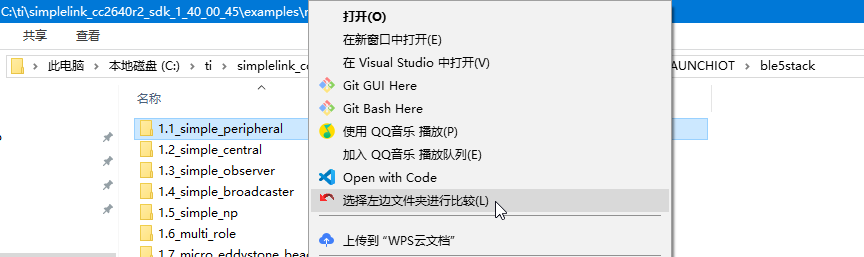
对于要比较的另外一个文件夹，右键，和 xxx 比较
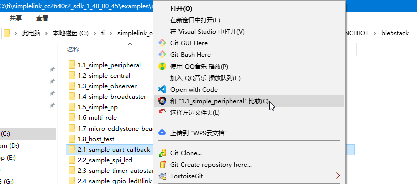
即可打开主界面，看到详细的比较结果：
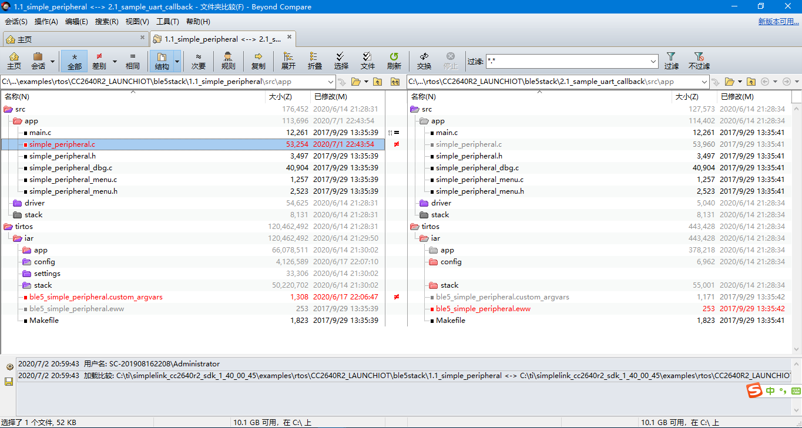
双击某文件，查看具体某个文件的对比结果：
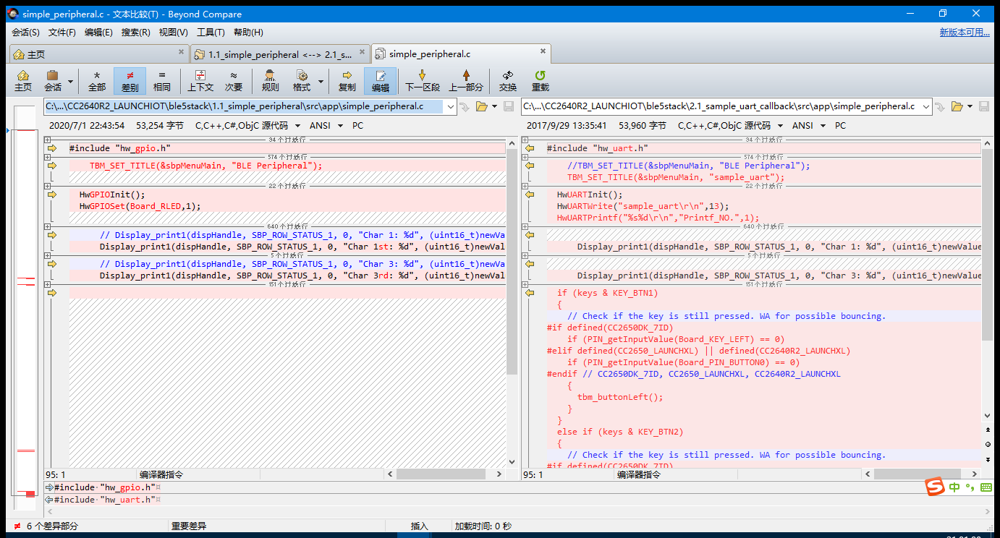
Mac
wda代码对比
某次，希望把当前对于Python的facebook-wda的库的代码的改动，整理出来。
就需要知道原先的代码：
openatx/facebook-wda: Facebook WebDriverAgent Python Client Library (not official)
https://github.com/openatx/facebook-wda
git clone https://github.com/openatx/facebook-wda.git
下载后得到原始代码。
和
此处本地
pip install facebook-wda
安装到本地Python库的
/Users/limao/.pyenv/versions/3.8.0/Python.framework/Versions/3.8/lib/python3.8/site-packages/wda/__init__.py
中的文件去做对比，找出改动位置。
所以就可以去：
选中改动后的代码：
Select Left folder to Compare
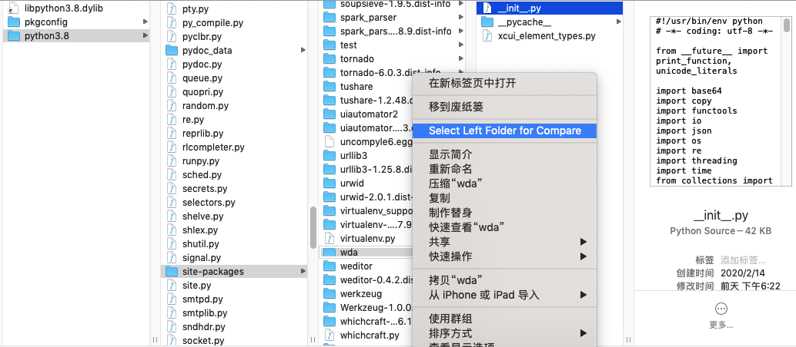
再去选中被比较的原始代码：
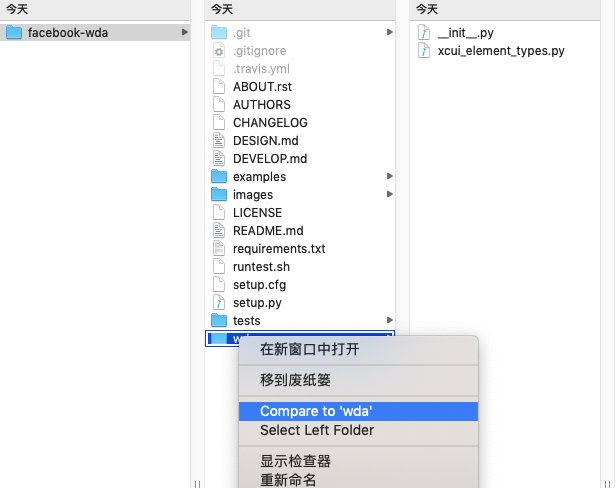
即可打开比较窗口：
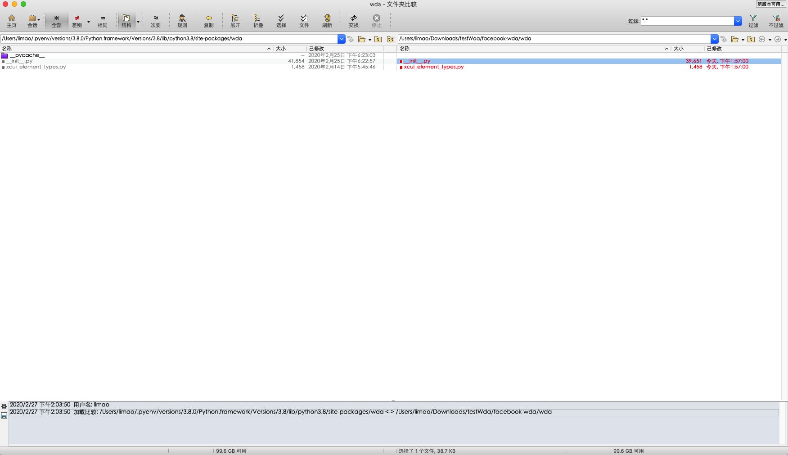
双击要比较的__init__.py
即可打开tab页，查看到文件内容差异：
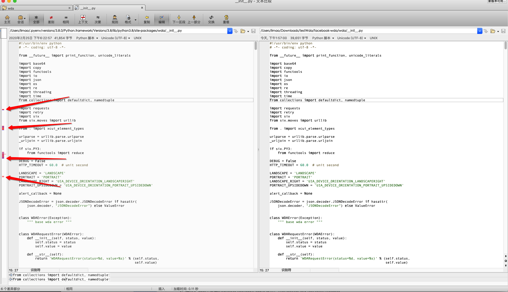
点击左边红色的有差异的地方，即可看到改动的代码：
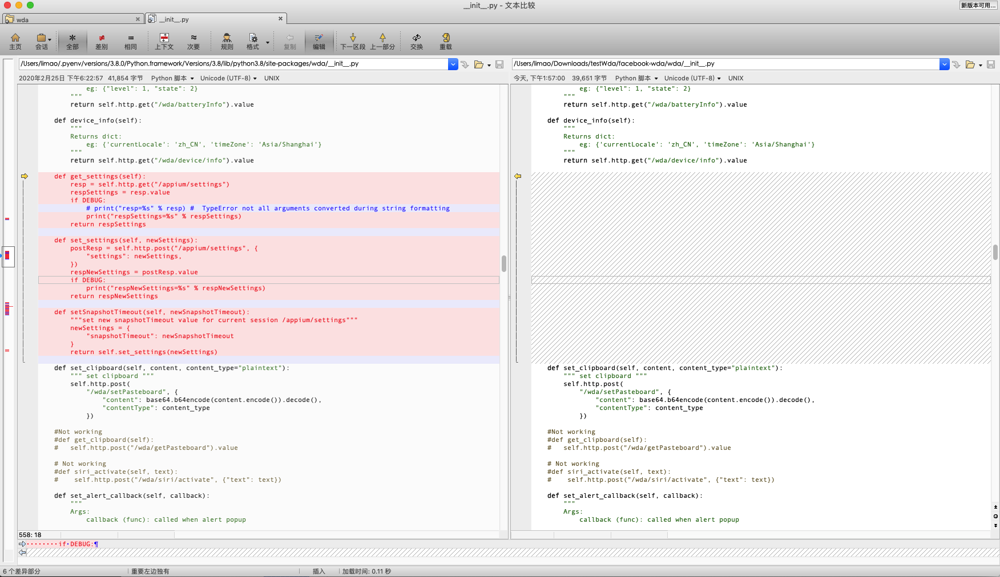
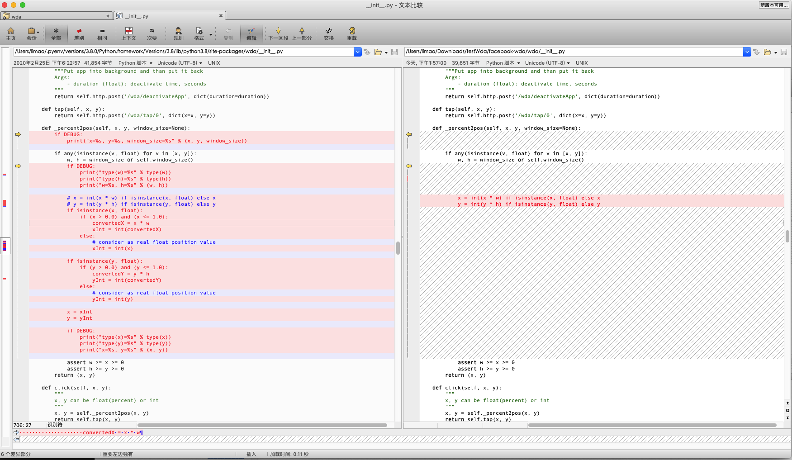
即可复制出差异部分
用途：得到要保存的改动，放到文档中：
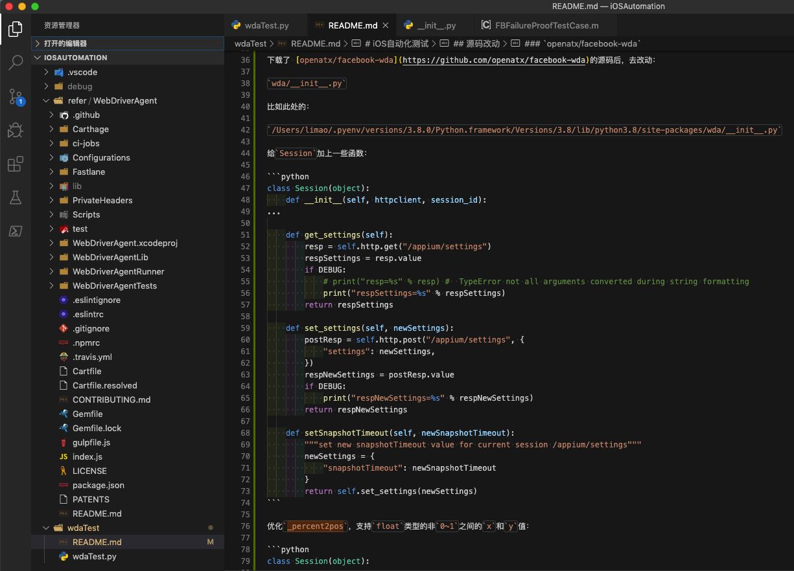
- 只看差异部分
如果只想要看有差异的部分，点击 差别：
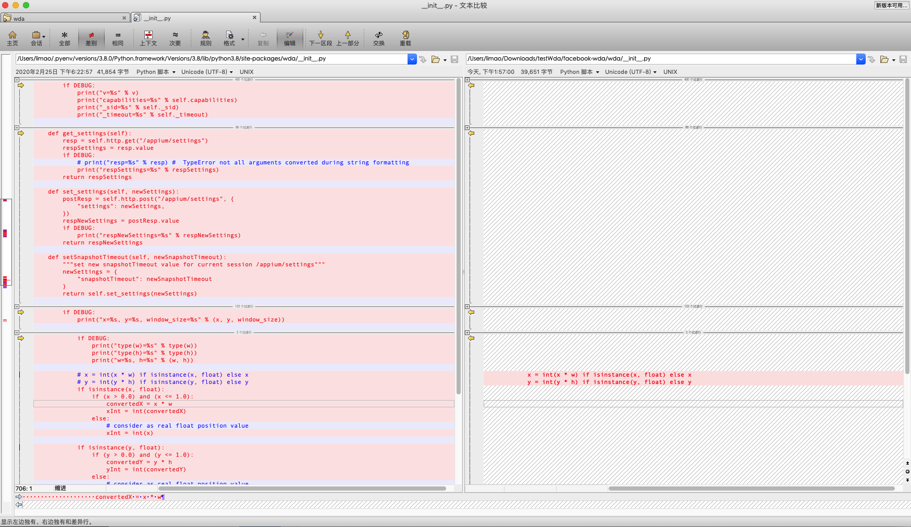
- 显示上下文
如果觉得，不容易看出具体是哪段代码，想要看到有差异的地方的前后的代码，则再点击上下文：
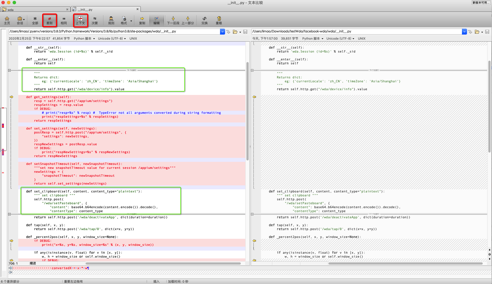
很是方便，容易看出代码改动部分的上下文，方便查阅。
特殊格式支持
word
还支持word文件内容对比：
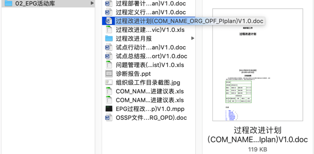
去和另外一个word去对比，原始word内容左右对照看是这种：
可见都是word中主体纯文本内容去对比：
用Beyond Compare去对比的效果是：
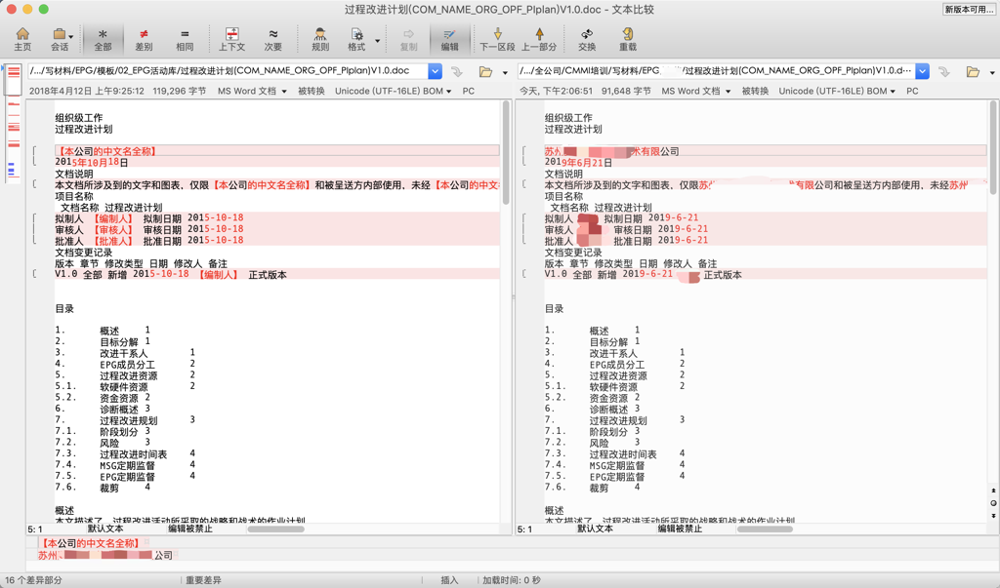
清晰明了，供对比内容差异。